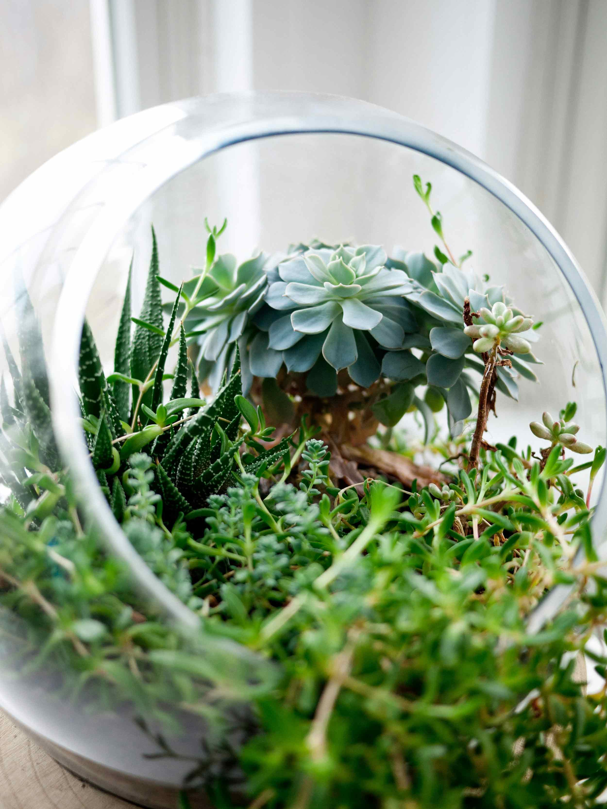

Workshop Title: Miniature Jungles: Designing Living Art at Etotic Garden Gallery
Escape into a world of verdant wonder at our exclusive "Miniature Jungles" workshop. Hosted within the breathtaking surroundings of Exotic Garden Gallery, this hands-on session invites you to craft your own self-sustaining, tropical paradise.Under the guidance of our lead horticultural curator, you will learn the art of creating a "living landscape" inside high-end premium glass vessels. We provide everything needed to build a flourishing ecosystem, including rare exotic plants, lush mosses, and specialized, nutrient-dense layering substrates. Whether you are a seasoned plant enthusiast or a novice, you will leave with a stunning, low-maintenance, bespoke piece of art—complete with a cork lid to create a thriving, sealed ecosystem.
What You'll Experience
- Curated Exotic Selection: Access rare tropical ferns, fittonias, and mosses.
- Premium Glassware: Design in a high-quality, large, hand-blown glass jar.
- "Terrarium Bling": Add unique natural objects and rare materials to create a story within your jar.
- Expert Instruction: Learn proper layering techniques, plant care, and ecological balance.
- An Immersive Evening: Sip botanical tea while relaxing among the exotic plants of the gallery.
Date & Time: Saturday, June 13th | 2:00 PM – 4:00 PMLocation:
Exotic Garden Gallery – Conservatory Hall